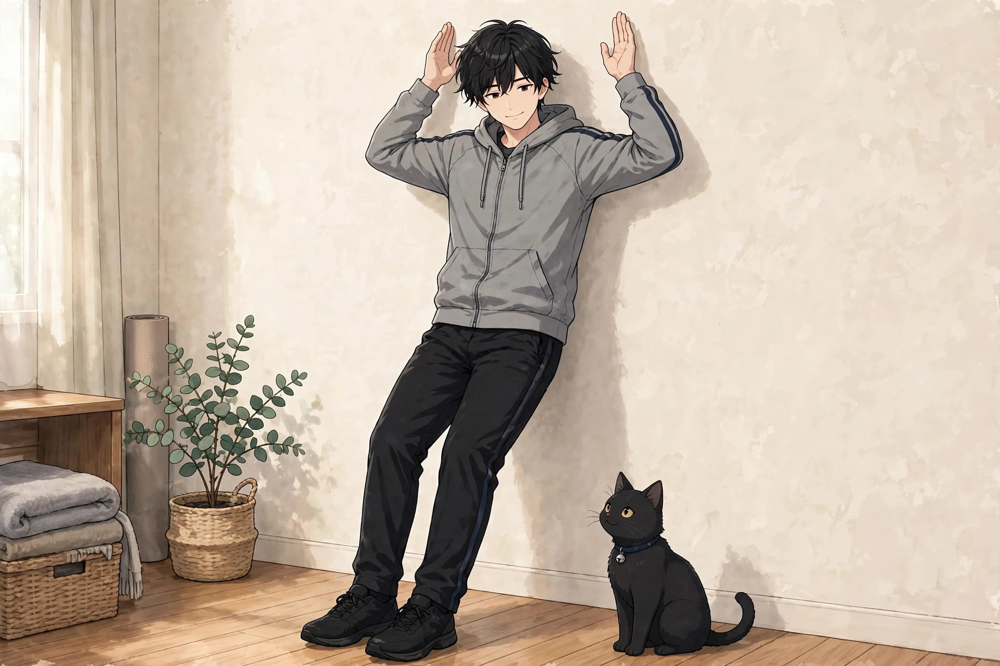
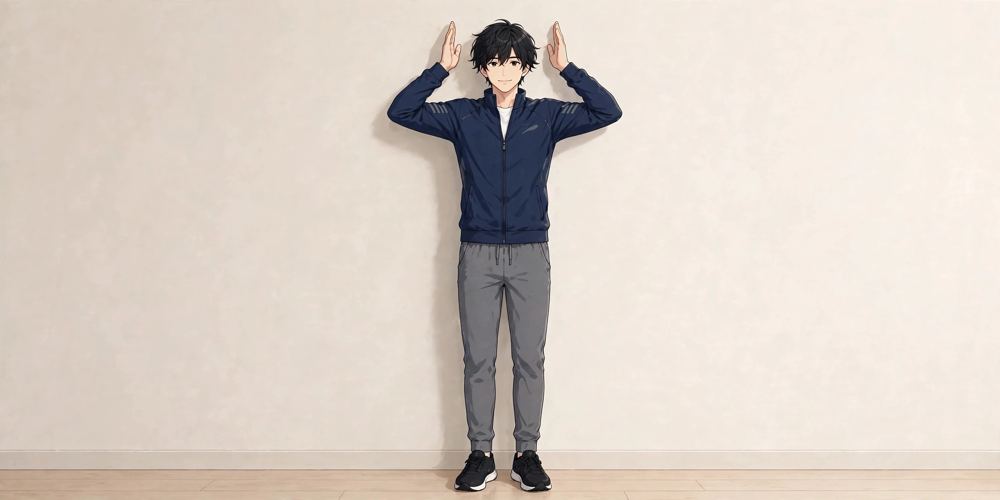
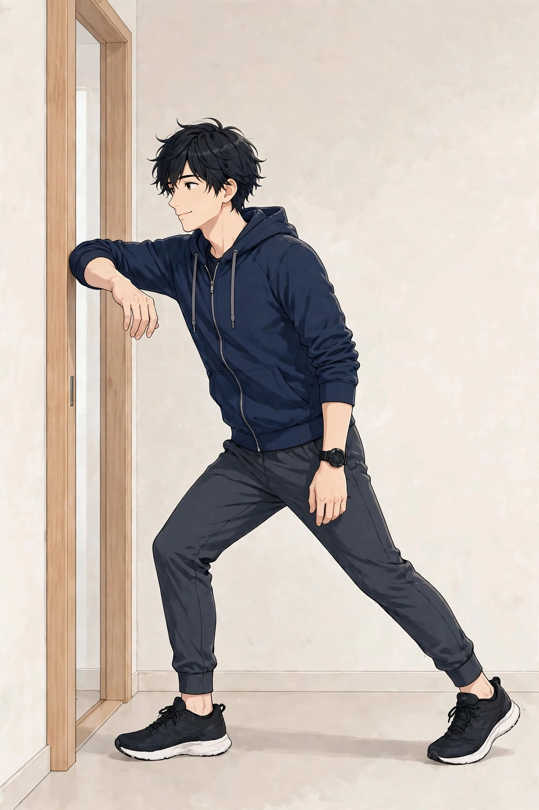

巻き肩・猫背対策｜壁でできる背中と肩の運動（メンズ）

始める前に：痛み・しびれがある場合は行わないでください。途中で痛みが出たら中止し、気になる症状が続く場合は医療機関に相談してください。回数や秒数は目安で、無理のない範囲から始めてください。
ケント：ジャケットの肩が合わないと感じる人は、服の前に肩の位置を確認してみてください。壁を使った運動をまとめました。所要は約5分です。
やり方1：ウォールエンジェル（8回×2セット）
- 壁に背中をつけて立ち、腕を壁に沿わせます
- 腕を壁から離さず、ゆっくり上下させます（図1）
- 腰が反る範囲までは上げません

やり方2：ドア枠の胸ストレッチ（左右各20秒）
胸の前側を開くストレッチです（図2）。デスクワークの合間にもできます。

服の見え方との関係
肩の位置が整うと、ジャケットの肩線と襟元の収まりが変わります。服側の選び方は猫背でジャケットが決まらない人のアウターの選び方にまとめています。
この記事のテーマに合う用品
PR：背中ケアに合う用品（PR）


あわせて読みたい：トレーニング用品一覧／お腹対策のドローイン